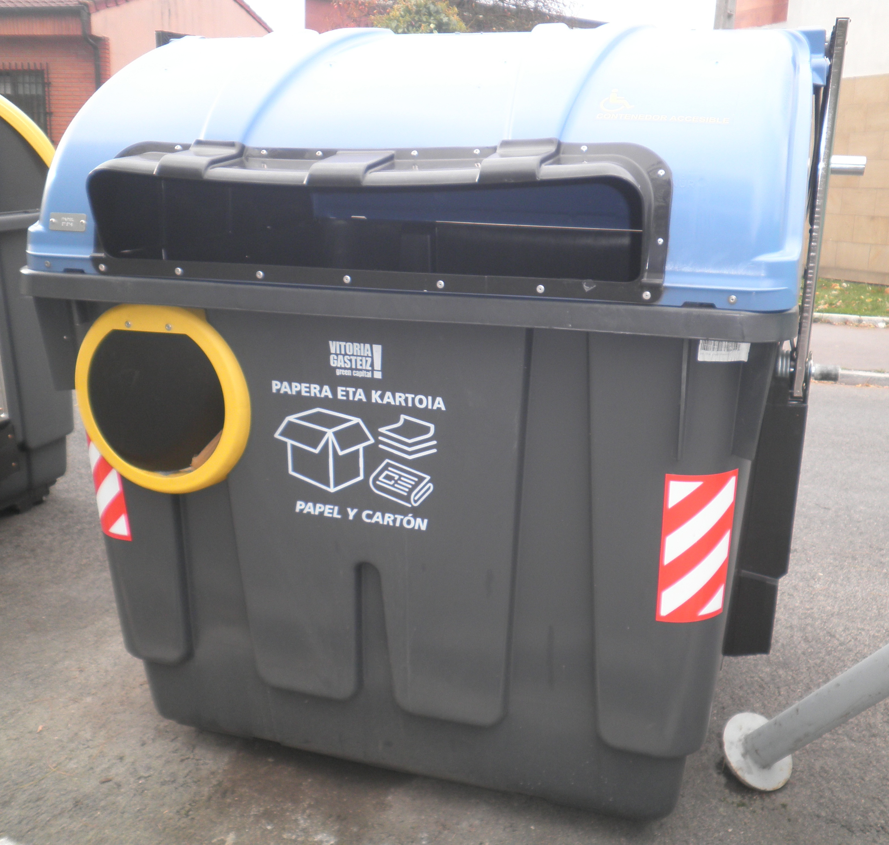
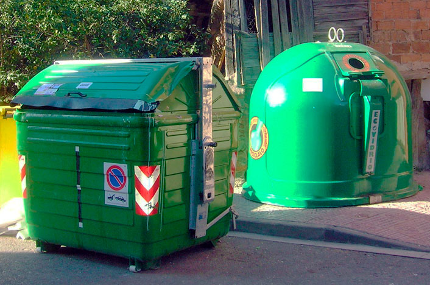
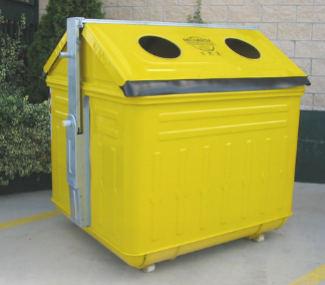
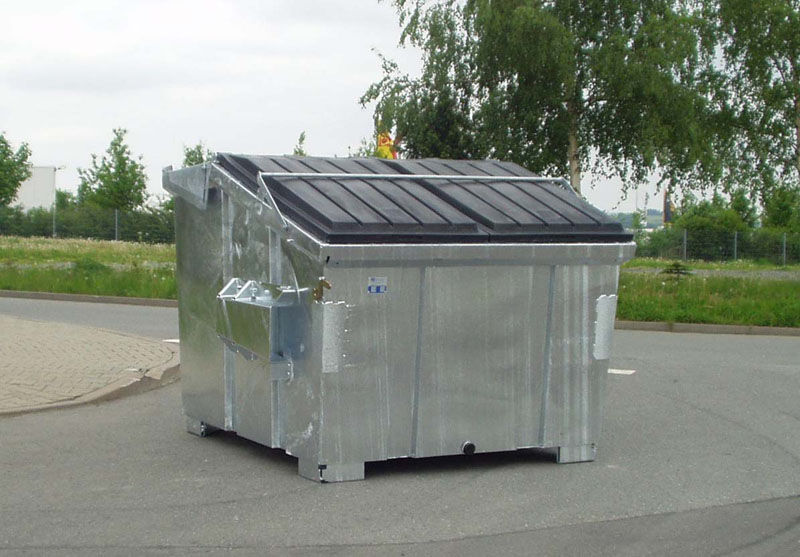
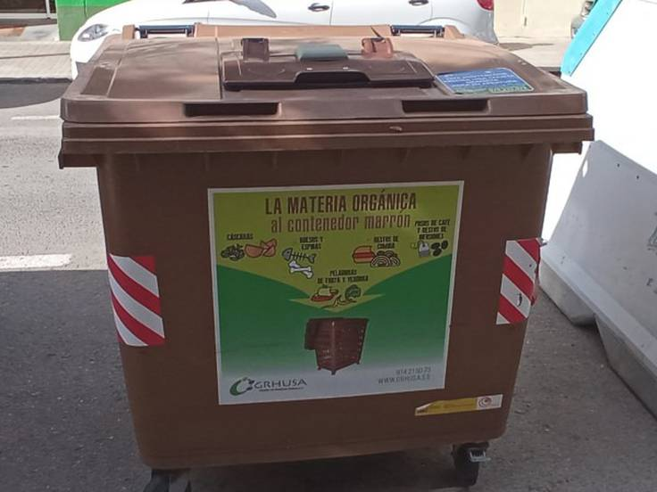
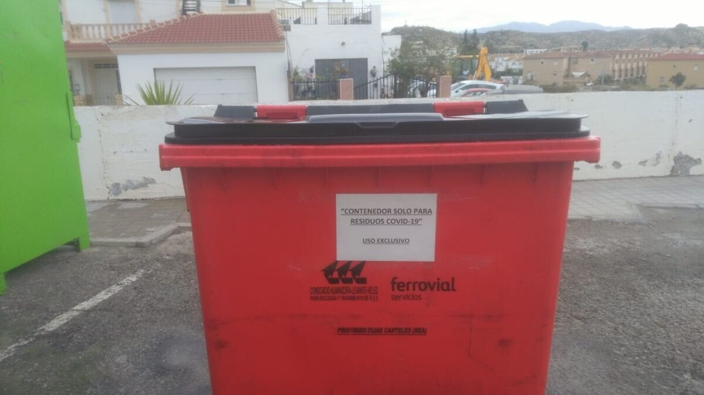

CONTENIDOR DE RECICLATGE DEL PAPER
Color del contenidor: blau clar o gris clar
Contingut del contenidor: Paper d'oficina, diaris,
revistes, cartró, tetrabrick, altres productes de paper.

CONTENIDOR DE RECICLATGE DE VIDRE
Color del contenidor: verd o verd fosc
Contingut del contenidor: Ampolles de vidre, pots de vidre,
envasos de vidre, pots de conserva, altres productes de vidre.

CONTENIDOR DE RECICLATGE DE PLÀSTIC
Color del contenidor: groc o verd clar
Contingut del contenidor: Ampolles de plàstic, envasos de plàstic,
bosses de plàstic, embolcalls de plàstic, envasos de iogurt,
altres productes de plàstic.

CONTENIDOR DE RECICLATGE DE METALL
Color del contenidor: gris o platejat
Contingut del contenidor: Llaunes d'alumini, llaunes de conserva,
tapes de metall, envasos de metall, altres productes de metall.

CONTENIDOR DE RECICLATGE DE MATÈRIA ORGÀNICA
Color del contenidor: marró o verd fosc
Contingut del contenidor: Restes d'aliments, escorces de fruites i verdures,
grinyols de cafè i bossetes de te, residus de jardineria, altres productes biodegradables.

CONTENIDOR DE RECICLATGE DE RESIDUS PELIGROSOS
Color del contenidor: taronja o vermell
Contingut del contenidor: Piles i bateries, bombetes fluorescents,
productes químics domèstics, medicaments vençuts, altres materials perillosos.



 5
5